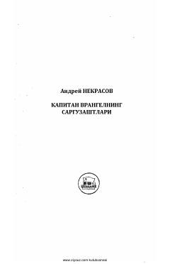

KVKapitan Vrungel va uning do'stlarining dengiz bo'ylab boshdan kechirgan qiziqarli sarguzashtlari.
Ushbu asar kapitan Vrungel va uning sodiq hamrohlari Lom hamda Fuksning «Xatar» nomli yelkanli kemada amalga oshirgan qiziqarli va kulgili dengiz sayohatlari haqida hikoya qiladi. Kapitan Vrungel o'zining aqlbovar qilmas sarguzashtlari bilan yosh kitobxonlarning sevimli qahramoniga aylangan.